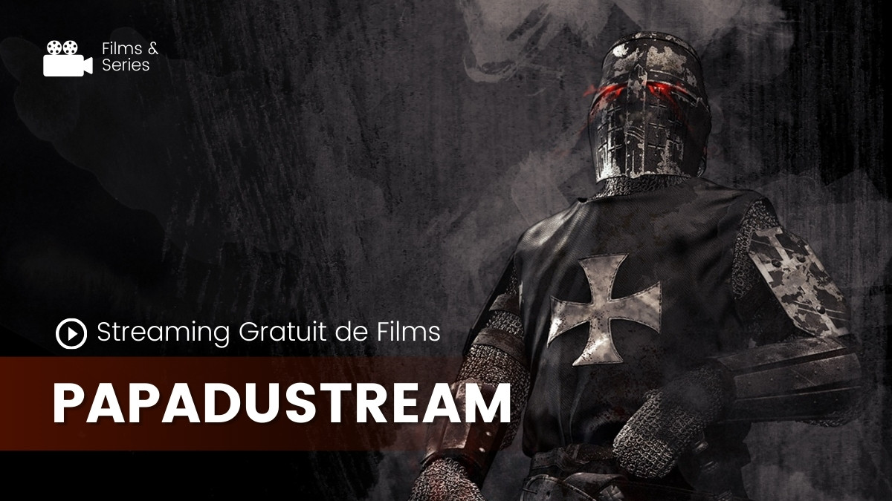

Papadustream - Site Officiel de Films et Séries en Streaming
Dans un monde où le streaming est devenu une partie essentielle de notre vie quotidienne,
Papadustream se distingue comme une plateforme incontournable pour les amateurs de films et séries.
Avec une vaste bibliothèque de contenus en VF et VOSTFR, Papadustream offre une expérience utilisateur fluide et captivante.
Que vous soyez un passionné de cinéma ou un adepte des dernières séries, cette plateforme répondra à vos attentes avec une
qualité exceptionnelle et une accessibilité impressionnante.

Qu'est-ce que Papadustream ?
Papadustream est une plateforme de streaming en ligne qui propose une grande variété de films et séries,
disponibles en versions doublées ou sous-titrées. Son interface intuitive et ses fonctionnalités avancées permettent aux utilisateurs
de profiter d’un accès rapide et illimité à leurs contenus préférés.
Caractéristiques clés de Papadustream :
- Large choix de contenu : Une collection impressionnante de films et séries dans divers genres.
- Options multilingues : Disponibilité en VF et VOSTFR pour s’adapter aux préférences de tous les spectateurs.
- Interface utilisateur intuitive : Une navigation fluide et un design moderne qui rendent l'expérience agréable.
- Streaming de haute qualité : Résolution HD et diffusion rapide sans interruption.
- Accès gratuit : Une grande partie du contenu est disponible sans frais supplémentaires.
Pourquoi choisir Papadustream ?
Papadustream se distingue grâce à ses nombreux avantages compétitifs :
- Accessibilité universelle : Compatible avec plusieurs appareils, y compris smartphones, tablettes et ordinateurs.
- Expérience utilisateur optimisée : Une plateforme conçue pour minimiser les publicités intrusives et maximiser le plaisir de visionnage.
- Bibliothèque mise à jour régulièrement : Retrouvez les derniers films et épisodes des séries populaires dès leur sortie.
- Sécurité et fiabilité : Une navigation sécurisée sans risque de contenu malveillant.
"Papadustream est ma plateforme de streaming préférée. Je peux toujours trouver ce que je cherche sans payer une fortune." – Julie, Paris.
Alternatives à Papadustream
Bien que Papadustream offre une expérience exceptionnelle, d'autres plateformes de streaming peuvent également répondre à vos besoins. Voici une comparaison rapide :
| Plateforme |
Avantages |
Inconvénients |
| Netflix |
Large choix, contenu original |
Abonnement coûteux |
| Amazon Prime Video |
Inclus avec Amazon Prime, contenu varié |
Interface parfois confuse |
| Disney+ |
Idéal pour les fans de franchises populaires |
Catalogue limité en dehors de Disney |
| Crunchyroll |
Spécialisé en anime |
Principalement en anglais |
| Canal+ Séries |
Séries européennes et internationales |
Nécessite un abonnement |
FAQs : Tout ce que vous devez savoir sur Papadustream
- Papadustream est-il gratuit ? Oui, une grande partie du contenu est gratuite, bien que certaines options premium puissent nécessiter un abonnement.
- Quels types de films et séries sont disponibles ? Vous trouverez des films d'action, comédies, drames, ainsi que des séries populaires et des anime.
- Puis-je télécharger des films ou séries sur Papadustream ? Actuellement, le téléchargement n’est pas pris en charge. Le contenu est exclusivement disponible en streaming.
- Papadustream est-il légal ? Papadustream respecte les lois locales en vigueur, mais il est conseillé de vérifier selon votre région.
- Quels appareils sont compatibles avec Papadustream ? La plateforme fonctionne sur smartphones, tablettes, ordinateurs et téléviseurs connectés.
- Comment améliorer ma qualité de streaming ? Assurez-vous d’avoir une connexion internet stable et rapide.
- Papadustream propose-t-il du contenu original ? Non, la plateforme agrège principalement des films et séries déjà disponibles sur le marché.
- Le contenu est-il sous-titré ? Oui, beaucoup de films et séries sont disponibles en version sous-titrée (VOSTFR).
Conclusion
Avec ses fonctionnalités riches et une expérience utilisateur sans faille, Papadustream s’impose comme une solution idéale pour tous les passionnés de films et séries. Que vous recherchiez une soirée détente ou une session binge-watching, cette plateforme est faite pour vous.
Ne manquez pas l’occasion d’essayer Papadustream dès aujourd’hui et découvrez un univers de divertissement à portée de clic !